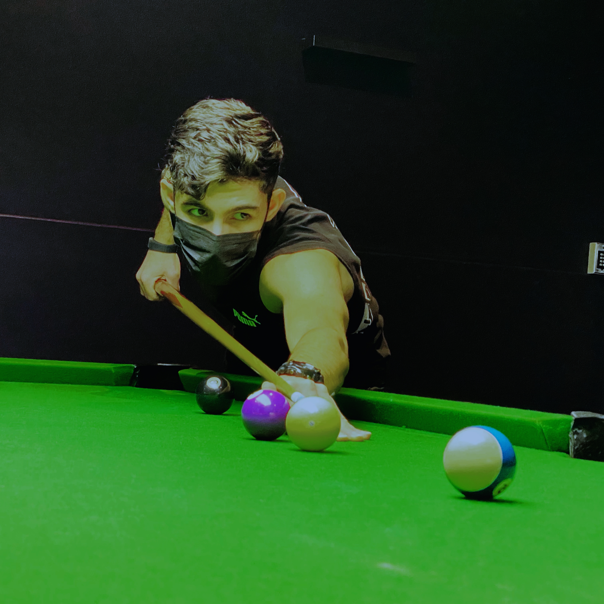

I am from London,ON. I study AI Software Engineering Technology at Centennial College.
I was a Dentistry student for one year in Dijlah University in Baghdad, Iraq.
If it comes to electronic devices, I always choose Apple products.
My favourite drink is H2O.
One of my favourite quotes is:


Here are some of my favourite hobbies:
- Working out
- Taking some snapchat photos after work out
- Playing 8 Pool
- Playing Soccer
- Watching Movies
- Playing Video Games
- Swimming
- Playing Ping Pong
- Listening to music